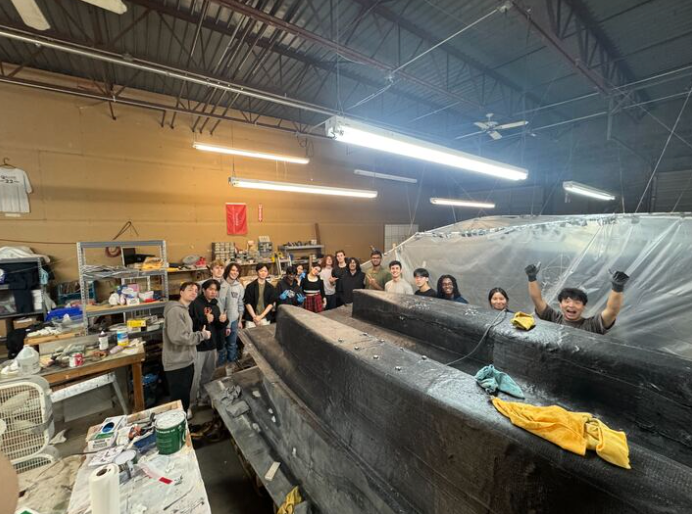
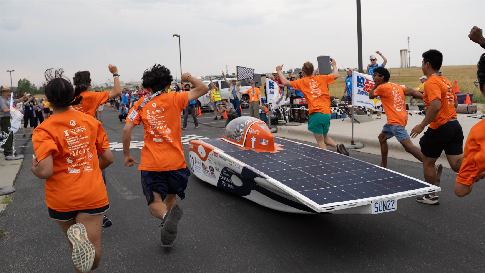
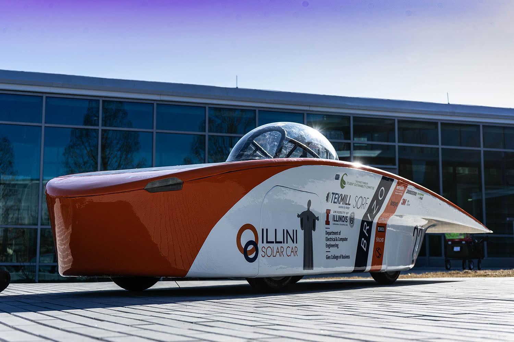
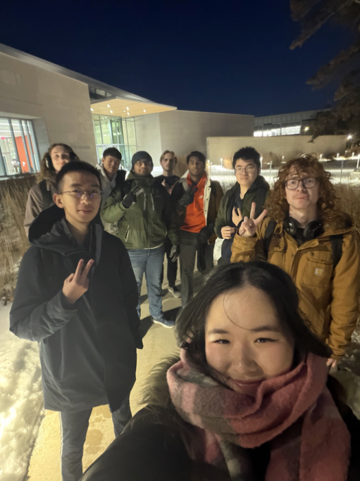
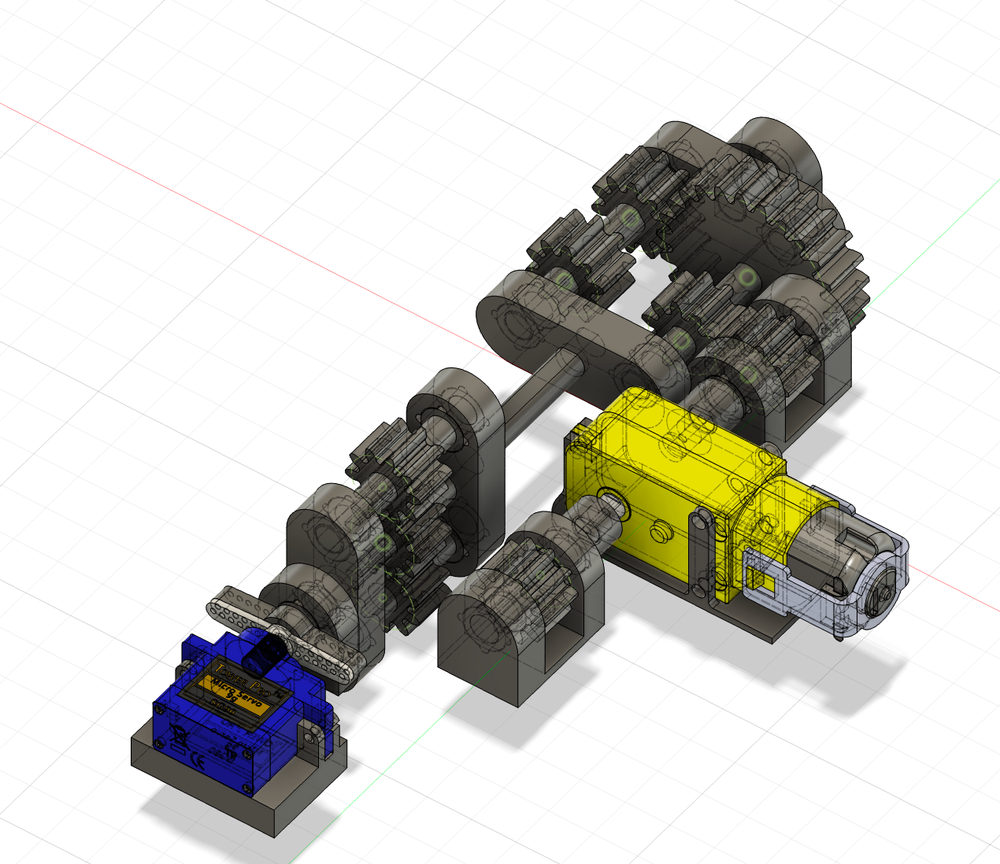
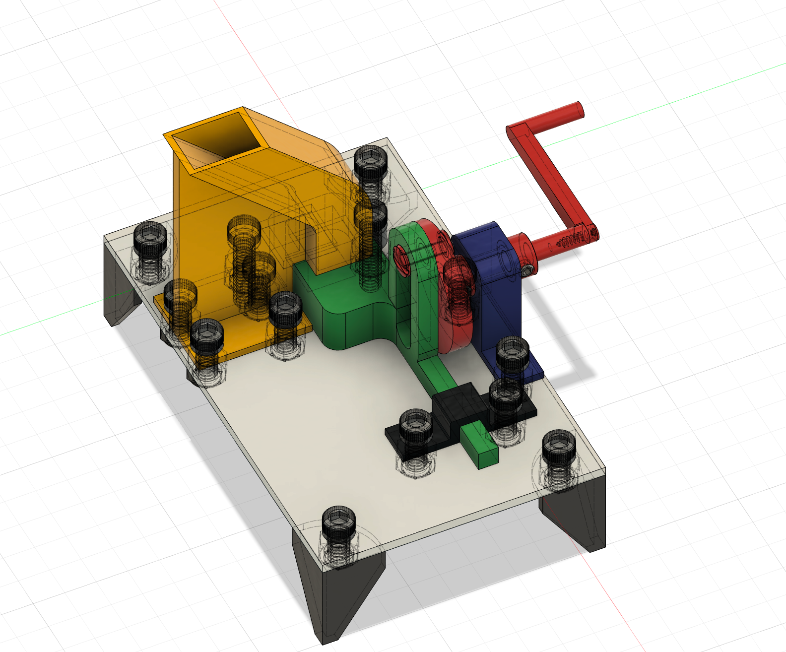
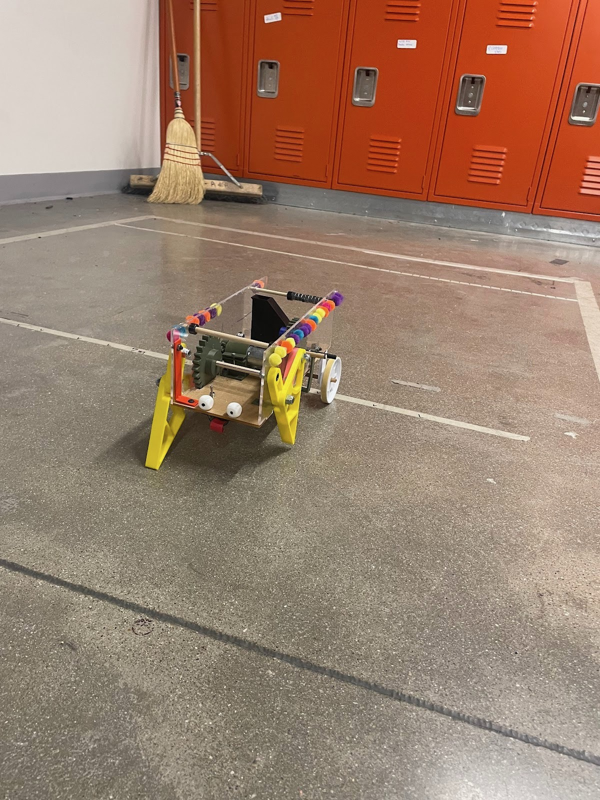

Mechanical Engineering student at the Grainger College of Engineering
Welcome to my portfolio site! My name is Elias, and I'm a Junior at the University of Illinois.
Below you can find more information on my work. I'm currently seeking an internship for Summer 2026.
B.S. Mechanical Engineering (Minor in Physics), Grainger College of Engineering, University of Illinois Urbana-Champaign.
Expected graduation: May 2027. GPA: 3.60. Dean’s List (Spring 2024).
Marketing contributions + mechanical integration work, composites, and enclosure R&D.
CompositesCADR&DTeamwork
Extracurricular Involvement
Illini Solar Car
Marketing & Mechanical Team Member




Marketing Team Member
Spring 2025 – Present
weekly meetings, merchandise + social planning, sponsor thank-you posts, event announcements, and occasional appearance in Instagram/TikTok videos.
MarketingCanvaSocialTeamwork
Mechanical Team — Melec Subteam
Fall 2025 – Present
shell fabrication support, sanding foam molds, composite layups for intermediate molds, material transport + workspace reorg after relocation.
ManufacturingCompositesIntegrationCAD
Creative Extracurricular
In-Line Insomniacs
Apr 2025 – Present
In my free time, I enjoy sharpening my skills in longboarding. I've been recreationally skating with the student organization,
In-line Insomniacs, for just over one year now.
In the tooling room, operators faced significant difficulty transporting die blanks. Forklift use was impractical due to the room layout,
and the blanks were too heavy for manual handling. Lifting the blanks into the lathe was also challenging and unsafe when done by hand.
I was tasked with designing a lifting device capable of safely transporting and positioning these blanks. The device needed both radial and axial
adjustability to accommodate the full range of blank sizes used in production.
I began by measuring the maximum diameter and weight requirements for the lift. I then modeled the device in Autodesk Inventor and performed finite
element analysis (FEA) throughout multiple design iterations to verify compliance with safety factors. The final design consisted of an adjustable
double-cradle fabricated primarily from steel bar stock and sheet metal, selected for availability and cost efficiency.
Two bars were fixed near the top of one cradle, while a third bar slid in and out with incremental adjustment via pin holes. Radial adjustment was
achieved on the same cradle through a parallel wedge mechanism driven by a crank threaded through the cradle wall; this configuration reduced stress
transfer to the threads. A threaded swivel hoist ring was mounted at the top of each cradle to ensure proper center-of-mass alignment and prevent
tipping during lifting.
This project provided end-to-end experience in designing and validating a mechanical device independently. I applied principles from design coursework
including human-centered design, iterative development, and design for manufacturability. I also gained my first practical experience performing FEA.
Overall, this was my most rewarding project during the internship.
Press Winch Retrofit Scrapped
In the tooling room, a hydraulic press was mounted within a large steel crosshead assembly. The crosshead had multiple height positions secured by pins
and was raised or lowered using a manually cranked winch. Due to the extreme combined weight of the crosshead and press, this adjustment method was
inefficient and physically demanding.
I was tasked with developing a motorized solution to move the crosshead vertically. Two potential approaches were evaluated: retrofitting the existing
winch by replacing the crank and gearbox with a motor, or replacing the entire winch assembly with a motorized unit.
I measured relevant dimensions, modeled the assembly in Inventor to estimate weight, and used statics to calculate cable tension and torque required.
I also determined the existing gearbox ratio and derived motor specifications.
Motors from suppliers such as Grainger and McMaster-Carr exceeded cost constraints. I investigated replacement electric hoists/winches; one candidate met
most specs but supported a single cable line rather than the required two-line configuration. Manufacturer communication delays prevented completion
before my internship ended.
Despite not finishing, I developed skills in cost analysis, motor/gear fundamentals, applied statics, and communicating designs through Inventor/AutoCAD drafting.
Wheel Disk Press Die Set-Up Drawings Finished
Press dies are the primary tooling used to manufacture wheel disks. Different disk models require unique die configurations with interchangeable components.
Set-up drawings communicate precise assembly configurations to manufacturing operators.
I produced set-up drawings for processes including blanking, forming, and punching. For each, I retrieved part info from Oracle, identified required components,
created a 3D assembly in Inventor, and translated it into a 2D drawing for shop-floor use.
Some legacy components existed only as 2D drawings, which I converted into 3D models. In cases with older hard-to-read scans, I retrieved physical archive
drawings. When drawings were incorrect (e.g., hole locations), I measured physical parts and updated both the drawing and model.
This strengthened my proficiency in Inventor/AutoCAD and my understanding of real documentation workflows for manufacturing use.
Classes
Selected coursework design projects
ME 371: Mechanical Design II — Car Project In progress
User needs: Speed > 1.25 m/s • Lift 1 kg • 5 traversals across 1m spacing in 60s • Brake burnout • <$25 • survive 3kg drop (0.25m) • gearbox efficiency ≥25%.
Our team finalized the layout and selected a revolver-style constant-mesh transmission inspired by a LEGO Technic mechanism. Based on prior experience,
I took responsibility for transmission design and am currently completing the CAD model.

ME 370: Mechanical Design I — Dispensing Walker Project Finished
Requirements: Dispense 5 payloads over 10m (2m spacing) • Traverse in 10 min • ≥2 linkage legs • ≤$100 budget • high-fidelity materials • works when scaled ×10.
Our team selected sick students on campus as the user group and chose medical supplies (pills/bandages) as the payload. We implemented a Scotch-yoke
mechanism to convert rotational motion to linear dispensing motion, enabling a single-motor drive.
For locomotion, the walker used two four-bar linkage legs with rear support wheels. I designed the gear train controlling walking speed and dispensing
frequency using Fusion 360’s spur-gear plugin. I incorporated shaft-collar features with set-screw holes to prevent radial/axial slip.
Ratios and layout required iteration during testing; I adjusted chassis geometry to fit gearing and refined ratios until payloads dispensed at correct intervals.
The walker traversed the required distance in under a minute in testing.
In final testing, the robot met all performance criteria: correct dispensing intervals, straight traversal, excess time margin, and budget compliance.


Student Organizations
Illini Solar Car
Fiberglass Horn PCB Enclosure R&D In progress
Our group is designing fiberglass enclosures for various PCBs to replace PLA 3D-printed enclosures and reduce weight. I am responsible for the horn PCB enclosure.
Mid-project, uncertainty about the true weight savings shifted the effort into an R&D evaluation.
I developed initial CAD while awaiting physical PCB access from the electrical team for fit verification. To evaluate material benefits, I fabricated two fiberglass panels
(2-ply and 3-ply layups). After curing, I compared 1 in² fiberglass samples to equivalent PLA and measured ~0.5 g/in² savings with fiberglass.
I presented these findings to mentors and leadership; implementation is still under review.